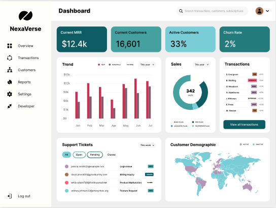

Real‐world examples demonstrating how AutomataX eliminates repetitive tasks and simplifies complex workflows, saving time and boosting efficiency.
Quick Stats:
70 hours monthly •
3 employees with more time
By introducing a custom Python script and emailing workflow, we saved countless hours of repetitive invoicing work.
// Pseudo-code for invoice generation
df = pd.read_excel("data.xlsx")
for sc_name, group in df.groupby("SC Name"):
invoice_pdf = create_pdf_invoice(sc_name, group)
send_email_with_attachments(sc_name, invoice_pdf)
Quick Stats:
70% faster approvals •
90% fewer email threads
By integrating Google Forms, Sheets, and Apps Script, we built a seamless approval workflow that replaced manual requests with instant, transparent approvals.


Alex: Processing invoices in accounting
64 hours monthly •
2 employees with more time
By automating these tasks, 64 hours are saved monthly, freeing up 2 employees to focus on higher‐value activities rather than repetitive data entry.
// Pseudo-code for automated invoice processing
loginToAccountingSoftware(creds);
csvData = readCSV("invoices.csv");
for (invoice in csvData) {
checkOrCreateProfile(invoice);
addInvoice(invoice);
if (invoice.requiresFiscalCheck) {
let fiscalInfo = fetchFiscalInfo(invoice.company);
updateInvoiceWithFiscalInfo(invoice, fiscalInfo);
}
finalizeEntry(invoice);
}
Quick Stats:
50 hours monthly saved •
3 employees freed
By leveraging modern Python libraries and a streamlined workflow, this automation solution eliminates repetitive manual tasks and ensures accurate, timely reporting of OOW consumption.


Quick Stats:
60 hours monthly saved •
4 employees freed
This automation solution streamlines the entire invoice generation process—eliminating manual steps and significantly reducing errors while saving valuable time.
# Pseudo-code for Invoice Generation Automation
import pandas as pd
# Load raw invoice data from Excel
df = pd.read_excel("raw_data.xlsx", sheet_name="Invoices")
# Process each unique SC (Service Center)
for sc in df["SC Name"].unique():
df_sc = df[df["SC Name"] == sc]
# Create a new invoice template
invoice = create_invoice_template()
# Auto-populate invoice fields
invoice.fill({
"SC Name": sc,
"Address": df_sc["Address"].iloc[0],
"GST": calculate_tax(df_sc)
})
# Save the generated invoice in a standardized format
save_invoice(invoice, f"output/Invoice_{sanitize_filename(sc)}.xlsx")
Quick Stats:
6 days monthly saved •
2 employees freed
This automation solution streamlines the PO extraction process—reducing manual effort, minimizing errors, and ensuring timely data entry and file management.


Quick Stats:
55 hours monthly saved •
3 employees freed
This automation solution transforms the daily KPI reporting process into an efficient, error‑free workflow that delivers timely insights and trend analysis—saving valuable time and reducing manual effort.
# Shortened Pseudo-code for Telecom RAN KPI & Performance Reporting
import pandas as pd
# 1. Load raw KPI data from the Airtel MyComm export
df = pd.read_excel("raw_kpi_data.xlsx")
# 2. Separate data into pre-payload & post-payload based on Activity_Date
# ...
# 3. Calculate Delta & Delta Percentage
# ...
# 4. Generate pivot table & export the final KPI report
pivot.to_excel("output/Telecom_RAN_KPI_Report.xlsx")
Quick Stats:
85% process automation •
75% reduction in manual errors
Leveraging Python, PyQt6, and Playwright, this solution integrates data extraction, reporting, and real‑time progress tracking into a single application—reducing manual intervention and ensuring accurate, timely outputs.
# Pseudo-code for Portal Automation & Reporting
# Initialize the GUI application
app = QApplication(sys.argv)
main_window = MainWindow() # Main window contains worker threads, progress bar, dashboard, etc.
main_window.show()
# In MainWindow, start the worker thread:
worker = SiteWorker(csv_data, download_dir)
worker.signals.progress.connect(update_progress)
worker.signals.error.connect(handle_error)
worker.signals.finished.connect(on_process_complete)
worker.start()
# In the worker thread (SiteWorker.run()):
for site in csv_data:
login_to_portal(site)
process_site_data(site)
download_and_archive_report(site)
update_progress_bar()
# On completion, generate a dynamic dashboard and display the report.
Quick Stats:
Real-time data updates •
Interactive & user-friendly interface
This web app consolidates data extraction, visualization, and reporting into a single interactive dashboard, empowering users with real-time insights and a modern, engaging interface.
